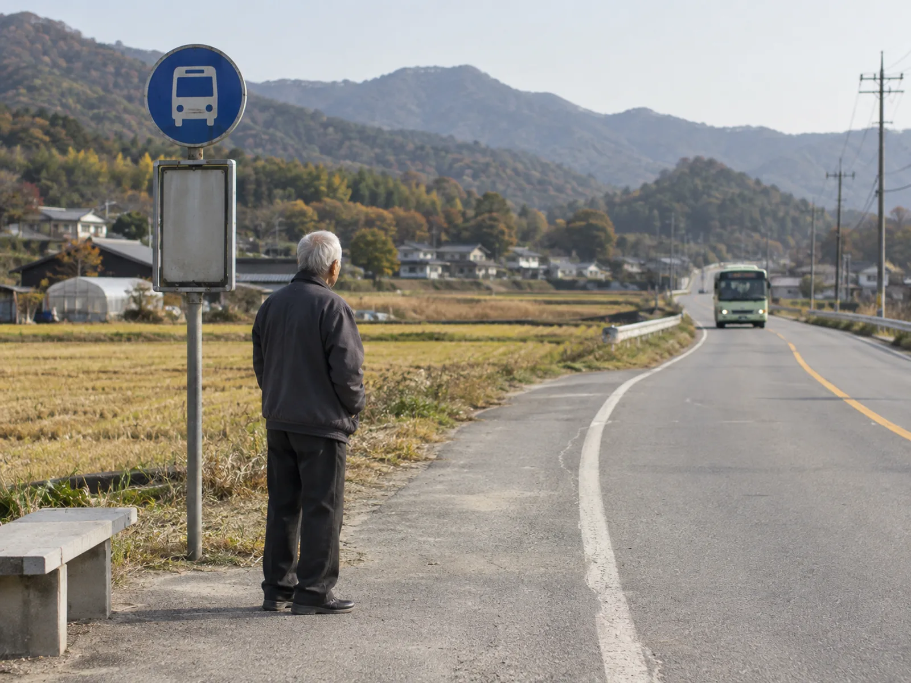

▲ 면허를 계속 쓸지, 반납할지의 고민은 이제 많은 고령 운전자에게 현실적인 질문이 됐다 ⓒ CarPrism (AI 생성 이미지)
지자체마다 "면허를 반납하면 교통카드를 드립니다"라는 안내문을 내건 지 벌써 여러 해다. 서울시는 2025년부터 지원금을 10만 원에서 20만 원으로 올렸고, 울산 울주군은 65세 이상에게 50만 원을 준다. 그런데도 정작 반납하는 사람은 늘지 않는다. 2025년 기준 65세 이상 자진반납률은 2.51%, 최근 5년 평균도 2%대 초반에 머물러 있다.
이 격차는 왜 좁혀지지 않는 걸까. 지원금 액수와 지자체별 차이, 고령운전자 사고 통계, 반납률이 낮은 근본적인 이유, 그리고 반납을 강제하는 대신 논의되고 있는 대안까지 2026년 현재 상황을 정리했다.
1. 지자체별 지원금, 얼마나 다른가
운전면허 자진반납 지원 사업은 국가 단일 제도가 아니라 지자체별 사업이다. 그래서 어느 지역에 사는지에 따라 받을 수 있는 지원금 액수가 크게 달라진다. 서울시는 70세 이상 어르신에게 20만 원이 충전된 교통카드를 지급하며, 이는 버스·택시·전국 티머니 가맹점에서 사용할 수 있다.
| 지자체 | 지원 내용 |
|---|---|
| 서울시 | 70세 이상, 20만원 교통카드(2025년 10만원에서 증액) |
| 서울 용산구 | 시 지원금 20만원 + 구비 48만원 = 총 68만원 |
| 울산 울주군 | 65세 이상, 50만원 |
| 인천시 | 기본 10만원 + 실운전 증빙 시 10만원 추가(총 20만원) |
| 부산시 | 70세 이상 10만원, 실운전 증빙 시 30만원 |
| 부산 연제구 | 75세 이상, 구비 30만원 현금 추가 지급 |
| 대전시 | 70세 이상 10만원, 운전 경력 증빙 시 20만원 |
📍 "실운전자 우대"로 바뀌는 흐름
최근 개편의 공통된 방향은 단순 면허 소지자보다 실제로 운전을 해온 사람을 우대하는 것이다. 인천·부산 등은 최근 일정 기간 보험 가입 이력이나 운행 기록 등 실운전 증빙을 제출하면 지원금을 추가로 얹어준다. 면허는 있지만 실제로는 운전을 하지 않는 고령자보다, 실제 도로 위 사고 위험을 줄이는 데 초점을 맞추겠다는 취지다.
거주지별 정확한 지원 조건은 지자체 홈페이지나 주민센터에서 확인하는 것이 가장 정확하다. 서울시 면허반납 지원 공지 바로가기
▲ 면허 자진반납은 대부분 거주지 동주민센터에서 면허증을 지참해 신청하는 방식으로 이뤄진다 ⓒ CarPrism (AI 생성 이미지)
2. 고령운전자 사고, 실제로 얼마나 늘었나
지원금 확대 논의의 배경에는 통계로 확인되는 사고 증가세가 있다. 경찰청·도로교통공단이 발표한 2025년 교통사고 통계에 따르면, 전체 교통사고 건수는 전년 대비 1.3% 감소했지만 사망자는 오히려 늘었다. 그 주된 원인으로 지목된 것이 고령운전자 사고다.
| 지표 | 내용 |
|---|---|
| 가해 사고 건수 | 4만5,873건 (전년 대비 +8.3%), 전체 사고의 23.7% |
| 사고로 인한 사망자 | 843명 (전년 761명 대비 +10.8%), 전체 교통사고 사망자의 33.1% |
| 면허소지자 1만명당 사고 건수 | 83.4건 — 전체 평균(57.6건) 대비 약 45% 높음 |
| 보험 가입자 기준 사고율 | 4.57% — 65세 미만(4.04%)의 약 1.13배 |
| 65세 이상 면허 소지자 수 | 563만명 (2021년 401만명 대비 +40.2%) |
📍 "고령이라 위험하다"는 단순화는 경계할 부분
면허소지자 대비 사고율이 평균보다 높은 것은 사실이지만, 이 수치를 "고령운전자 전체가 위험하다"는 식으로 단순화하는 것은 신중해야 한다는 지적도 있다. 고령운전자 수 자체가 급격히 늘고 있어 전체 사고 건수도 함께 늘어나는 구조적 요인이 있고, 사고 원인을 연령만으로 단정하기보다 개인별 건강·인지 상태, 야간·고속 주행 빈도 등을 함께 봐야 한다는 것이 전문가들의 공통된 견해다. 이 기사도 특정 연령대에 대한 낙인이 아니라, 제도의 실효성을 짚는 데 초점을 둔다.
3. 반납률이 낮은 진짜 이유 — 대중교통과 생계
지원금이 부족해서만은 아니다. 반납률이 특히 낮은 곳은 대도시가 아니라 농어촌 지역이다. 한국농촌경제연구원 조사에서는 65세 이상 농업인의 94.8%가 면허 자진반납에 참여할 의향이 없다고 응답했다.
✅ 면허를 반납하지 못하는 대표적인 이유
· 대중교통 접근성 부족 — 일부 농어촌 마을은 시내버스가 하루 1~2대만 운행
· 생계 수단 — 농사·소규모 자영업 등 "차가 없으면 일을 못 하는" 구조
· 지원금의 상대적 부족 — 국회입법조사처는 1회성 10만~20만원 지원금이 차량 유지비·이동 포기 비용에 비해 지나치게 적다고 지적
· 도시-농촌 격차 — 대도시일수록 반납 참여가 늘고, 농촌 지역일수록 목표치에 크게 미달하는 경향

▲ 대중교통이 하루 몇 차례에 그치는 지역에서는 면허 반납이 곧 이동 수단의 상실을 의미하기도 한다 ⓒ CarPrism (AI 생성 이미지)
즉 지원금만 올린다고 해결되는 문제가 아니라, 반납 이후의 대체 이동수단이 함께 마련돼야 한다는 지적이 계속 나오는 이유다. 실제로 일부 지자체는 반납자에게 콜택시 할인, 마을버스 무료 이용권 등을 함께 제공하는 방식으로 보완하고 있다.
4. 반납 대신 나오는 대안 — 조건부 면허와 적성검사 강화
반납률이 5년째 2%대에서 벗어나지 못하자, 정치권과 전문가들 사이에서는 "반납을 유도하는 방식 자체를 바꿔야 한다"는 논의가 이어지고 있다. 국회에서는 반납을 강제하기보다 운전을 계속하는 고령자의 안전성을 높이는 방향의 법안이 발의됐다.
| 대안 | 내용 |
|---|---|
| 조건부 면허 | 야간 운전 금지, 고속도로·자동차전용도로 주행 제한, 최고 속도 제한 등 조건을 붙여 면허 유지 허용 |
| ADAS 한정 면허 | 일본의 '서포트카 한정면허'처럼, 첨단운전자보조시스템(ADAS) 장착 차량에만 운전 허용 |
| 페달 오조작 방지장치 인센티브 | 장치 부착 시 면허 갱신 주기 완화 등을 담은 도로교통법 개정안 발의 |
| 정기 적성검사 강화 | 65세 이상 갱신주기 단축, 75세 이상 인지기능 확인 절차 추가 등 논의 |
📍 조건부 면허, 법적 정비가 먼저라는 지적
조건부 면허 처분은 국민의 이동의 자유를 직접 제한하는 침익적 행정행위의 성격을 띠기 때문에, 어떤 기준으로 조건을 부과할지 법률에 명확히 규정돼 있어야 법적 분쟁을 막을 수 있다는 것이 법조계의 지적이다. 즉 제도 도입 자체보다, 누구에게 어떤 기준으로 조건을 붙일 것인가를 정교하게 설계하는 일이 먼저라는 것이다.
▲ 조건부 면허 논의의 핵심은 '반납이냐 유지냐'가 아니라, 안전을 어떻게 보완할 것이냐에 있다 ⓒ CarPrism (AI 생성 이미지)
운전면허 정기 적성검사·갱신 제도의 세부 내용은 아래에서 확인할 수 있다. 찾기쉬운 생활법령정보 바로가기
5. 균형 잡힌 시각이 필요한 이유
고령운전자 문제는 "나이 든 사람은 위험하다"는 단순한 프레임으로 접근할 사안이 아니다. 같은 65세라도 건강 상태, 운전 경력, 주행 환경은 저마다 다르다. 반대로 반납을 마냥 미루는 것이 능사도 아니다. 사고 통계가 보여주듯, 나이가 들수록 반응속도나 시야각 등 신체 기능이 저하될 가능성은 존재하며 이는 본인과 타인의 안전 모두와 직결된다.
✅ 이 문제를 바라보는 균형 잡힌 관점
· 반납은 개인의 선택이어야 하며, 지원금은 그 선택을 돕는 유인일 뿐 강제 수단이 될 수 없음
· 대중교통이 부족한 지역일수록 대체 이동수단 마련이 지원금 인상보다 먼저일 수 있음
· 반납이 어렵다면 조건부 면허·ADAS 장착·정기 적성검사 등으로 안전을 보완하는 방향도 함께 검토할 가치가 있음
· 통계상 사고율 증가를 특정 연령대에 대한 낙인으로 연결짓지 않는 것이 중요함
6. 요약
고령운전자 면허 자진반납 제도는 지자체별로 최대 68만원까지 지원금을 걸고 있지만, 전국 반납률은 5년째 2%대에 머물러 있다. 65세 이상 운전자로 인한 사고와 사망자는 2025년에도 늘었지만, 반납률이 낮은 근본 원인은 지원금 액수보다 대중교통 접근성 부족과 생계형 운전에 있다는 지적이 많다.
이 때문에 정치권과 전문가들은 반납을 강제하기보다, 운전을 계속하는 고령자의 안전을 높이는 방향으로 논의를 옮기고 있다. 조건부 면허, ADAS 장착 차량 한정 운전, 정기 적성검사 주기 단축 등이 대표적인 대안으로 거론된다.
중요한 것은 어느 한쪽으로 치우치지 않는 접근이다. 반납을 원하는 고령자에게는 실질적인 대체 이동수단을, 운전을 계속해야 하는 고령자에게는 안전을 보완할 제도적 장치를 함께 마련하는 것이 현실적인 해법에 가깝다.